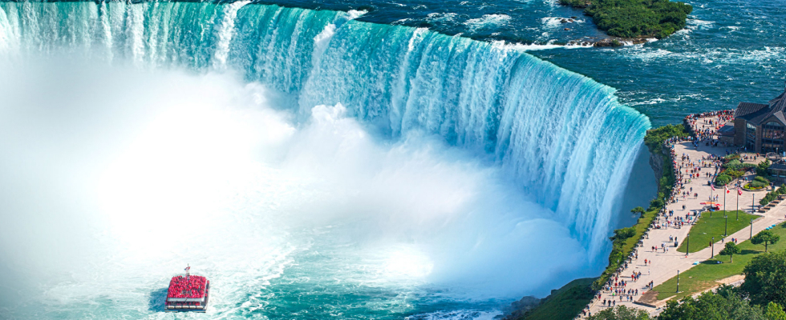

VISIT
Visit to Canada
- VANCOUVER
- BANFF
- TORONTO
- NIAGARA FALLS
- OTTAWA
- YELLOW KNIFE
- QUEBEC
-
The City of Vancouver is a coastal, seaport city on the mainland of British Columbia. Located on the western half of the Burrard Peninsula, Vancouver is bounded to the north by English Bay and the Burrard Inlet and to the south by the Fraser River.The City of Burnaby lies to the east and the Strait of Georgia to the west. Vancouver Island, across the Strait of Georgia, shields Vancouver from the Pacific Ocean.
Vancouver has a moderate, oceanic climate. Protected by the mountains and warmed by the Pacific ocean currents, Vancouver is one of the warmest cities in Canada.Although Vancouver has a reputation for rain, it actually ranks as the 9th rainiest location in Canada with Prince Rupert, Port Alberni, Chilliwack, Abbotsford, Campbell River, Halifax, Sydney, and St. John's beating Vancouver for average yearly rainfall. Vancouver's wettest months are November and December with an average precipitation of 182mm. And - with an average of just 41mm of precipitation - July and August are the driest months in Vancouver.
-
Province | British Columbia
Offical website | https://vancouver.ca/
#StanlyPark #Victoria Island #Capilano Suspension Bridge
-
Banff was first settled in the 1880s after the transcontinental railway was built through the Bow Valley. In 1883, three Canadian Pacific Railway workers stumbled upon a series of natural hot springs on the side of Sulphur Mountain. In 1885, Canada established a federal reserve of 26 km2 (10 sq mi) around the Cave and Basin hot springs and began promoting the area as an international resort and spa as a way to support the new railway. In 1887, the reserve area was increased to 673 km2 (260 sq mi) and named "Rocky Mountain Park". This was the beginning of Canada's National Park system.
The Banff townsite was developed near the railway station as a service centre for tourists visiting the park. Services, such as St George-in-the-Pines church, were constructed through the late 19th century. It was administered by the Government of Canada's national parks system until 1990 when the Town of Banff became the only incorporated municipality within a Canadian national park.
-
Province | Alberta
Offical website | https://banff.ca/
#Bow Falls #Rocky Mountain #Lake Louise
-
Toronto is the most populous city in Canada and the capital city of the Canadian province of Ontario. With a population of 2,794,356 in 2021, it is the fourth-most populous city in North America. The city is the anchor of the Golden Horseshoe, an urban agglomeration of 9,765,188 people (as of 2021) surrounding the western end of Lake Ontario,[11] while the Greater Toronto Area proper had a 2021 population of 6,712,341. Toronto is an international centre of business, finance, arts, sports and culture and is one of the most multicultural and cosmopolitan cities in the world.
Indigenous peoples have travelled through and inhabited the Toronto area, located on a broad sloping plateau interspersed with rivers, deep ravines, and urban forest, for more than 10,000 years. After the broadly disputed Toronto Purchase, when the Mississauga surrendered the area to the British Crown, the British established the town of York in 1793 and later designated it as the capital of Upper Canada. During the War of 1812, the town was the site of the Battle of York and suffered heavy damage by American troops. York was renamed and incorporated in 1834 as the city of Toronto. It was designated as the capital of the province of Ontario in 1867 during Canadian Confederation.
-
Province | Ontario
Offical website | https://www.toronto.ca/
#Toronto Island Park #CN Tower #Casa Loma
-
Niagara Falls is a group of three waterfalls at the southern end of Niagara Gorge, spanning the border between the province of Ontario in Canada and the state of New York in the United States. The largest of the three is Horseshoe Falls, which straddles the international border of the two countries. It is also known as the Canadian Falls.The smaller American Falls and Bridal Veil Falls lie within the United States. Bridal Veil Falls is separated from Horseshoe Falls by Goat Island and from American Falls by Luna Island, with both islands situated in New York.
Formed by the Niagara River, which drains Lake Erie into Lake Ontario before flowing out to the Atlantic Ocean by the Gulf of Saint Lawrence, the combined falls have the highest flow rate of any waterfall in North America that has a vertical drop of more than 50 m (160 ft). During peak daytime tourist hours, more than 168,000 m3 (5.9 million cu ft) of water goes over the crest of the falls every minute. Horseshoe Falls is the most powerful waterfall in North America, as measured by flow rate. Niagara Falls is famed for its beauty and is a valuable source of hydroelectric power. Balancing recreational, commercial, and industrial uses has been a challenge for the stewards of the falls since the 19th century.
-
Province | Ontario
Offical website | https://www.niagarafallsstatepark.com
#Rainbow Bridge #Skylon Tower #Casino Niagara - 
-
Ottawa is the capital city of Canada. It is located in the southern portion of the province of Ontario, at the confluence of the Ottawa River and the Rideau River. Ottawa borders Gatineau, Quebec, and forms the core of the Ottawa Gatineau census metropolitan area (CMA) and the National Capital Region (NCR). As of 2021, Ottawa had a city population of 1,017,449 and a metropolitan population of 1,488,307, making it the fourth-largest city and fourth-largest metropolitan area in Canada.
Ottawa is the political centre of Canada and the headquarters of the federal government. The city houses numerous foreign embassies, key buildings, organizations, and institutions of Canada's government; these include the Parliament of Canada, the Supreme Court, the residence of Canada's viceroy, and Office of the Prime Minister.Founded in 1826 as Bytown, and incorporated as Ottawa in 1855, its original boundaries were expanded through numerous annexations and were ultimately replaced by a new city incorporation and amalgamation in 2001. The municipal government of Ottawa is established and governed by the City of Ottawa Act of the Government of Ontario. It has an elected city council across 24 wards and a mayor elected city-wide.
-
Province | Ontario
Offical website | https://ottawa.ca/en
#capital city of Canada #Centre Block on Parliament Hill #Château Laurier
-
Yellowknife is the capital, largest community, and only city in the Northwest Territories, Canada. It is on the northern shore of Great Slave Lake, about 400 km (250 mi) south of the Arctic Circle, on the west side of Yellowknife Bay near the outlet of the Yellowknife River.Yellowknife and its surrounding water bodies were named after a local Dene tribe, who were known as the "Copper Indians" or "Yellowknife Indians", today incorporated as the Yellowknives Dene First Nation. They traded tools made from copper deposits near the Arctic Coast. Modern Yellowknives members can be found in city and in the adjoining, primarily Indigenous communities of Ndilǫ and Dettah.
The city's population, which is ethnically mixed, was 20,340 per the 2021 Canadian Census. Of the eleven official languages of the Northwest Territories, five are spoken in significant numbers in Yellowknife: Dene Suline, Dogrib, South and North Slavey, English, and French.
-
Province | Northwest Territories
Offical website | https://www.yellowknife.ca/en/index.aspx
#Great Slave Lake # Aurora borealis
-
Quebec, eastern province of Canada. Constituting nearly one-sixth of Canada's total land area, Quebec is the largest of Canada's 10 provinces in area and is second only to Ontario in population. Its capital, Quebec city, is the oldest city in Canada. The name Quebec, first bestowed on the city in 1608 and derived from an Algonquian word meaning “where the river narrows,” beckons visitors to the city's splendid view of the majestic St. Lawrence River and the pastoral Orleans Island.
The province's major metropolis, Montreal (Montréal), encompassing Montreal Island, Jesus Island to the north, and several communities on the south shore of the St. Lawrence River, is the second largest city in Canada. Quebec is bounded to the north by Hudson Strait and Ungava Bay, to the east by the province of Newfoundland and Labrador, to the southeast by the Gulf of St. Lawrence, New Brunswick, and the U.S. state of Maine, to the south by the U.S. states of New Hampshire, Vermont, and New York, and to the west by Ontario, James Bay, and Hudson Bay.
-
Province | Quebec
Offical website | https://www.britannica.com/place/Quebec-province
#Chateau Frontenac #Montreal #Séminaire Québec